Executive Dashboards
In this chapter, we will focus on how Dashboards can provide Executives and Managers with quick and easy access to relevant information regarding their organization’s performance. This will involve exploring the various Components that make up a Dashboard, such as charts and tables, and how they can be customized to display the necessary information. Additionally, we will touch on the importance of parameterizing Dashboard Components to allow for easy filtering and data navigation. Finally, the chapter will discuss how existing Cube Views can be leveraged as data sources for these Dashboard Components to ensure consistency and accuracy in the information presented.
In the upcoming step-by-step exercise, you will learn how to create an Executive Dashboard similar to the one shown in a standard demo. This Dashboard will display a variety of charts, KPIs, and other relevant content. You will also learn how to add combo boxes and radio buttons to allow for easy filtering and data selection, as well as tabs to facilitate intuitive User navigation. By following the steps in this exercise, you will be able to create a functional and visually appealing Executive Dashboard that can be used to quickly and easily monitor the performance of your organization!
Executive Dashboards
When, Why, and How to use them
Executive Dashboards are designed to provide timely and accurate information about KPI metrics and other business-specific data to streamline financial operations. OneStream provides you with the tools to deliver this efficiency within your organization. With some guidance on how to set up a simple Dashboard, you are sure to walk away with ideas for how your organization can best leverage your application.
Financial signaling is critical in today’s volatile economic environment, and Executives require precise and up-to-date information to make informed decisions. By understanding the needs of the User group, the Dashboard design can be customized to provide the most relevant and useful information. This can increase productivity, streamline Workflows, and improve decision-making.
Executive Dashboards
Design Considerations
Effective Dashboard design involves more than just creating an aesthetically pleasing layout. It requires a deep understanding of the intended User group and their needs to ensure that the Dashboard provides actionable and relevant insights.
When creating Dashboards, it is crucial to consider the message you want to convey. It is also essential to understand who your Users are and what information they need to see. Consider whether there are specific actions that need to be taken based on the results displayed or if the Dashboards are for informational purposes only.
Before building Executive Dashboards, it is recommended to collaborate with Executive Users to create an outline of the Dashboard’s look and feel. This collaboration will greatly reduce the possibility of rebuilding the Dashboard later on.
Executive Dashboards › Design Considerations
Build Your Own
In this exercise, we will construct a tabbed Executive Dashboard comprising four KPIs and three charts. The following are the Components that we will create:
Labels with conditional formatting and tool tips
Dialog buttons
Combo box
Radio buttons
Cube Views
Line Chart
Waterfall Chart
Bar Chart
Data Explorer Report
Executive Dashboards › Design Considerations › Build Your Own
Layout and Testing Preparation
When building Dashboards, I like to test certain Dashboard Components throughout the build process to see how the individual Components render. Not only does this help me focus on each part of the Dashboard – without the distraction of other parts – but it also helps me determine the size of the Components and how much Dashboard space I need to earmark for the respective Components.
The first step is to create the Dashboard Maintenance Unit (DMU) and a Dashboard called TestingDashboard_Exec as a placeholder for testing the Dashboard Components we will build. Navigate to Dashboards from the Application tab.
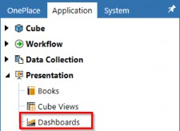
Figure 12.1
Select Maintenance Units and then click Create Maintenance Unit. Give the DMU a name and save.
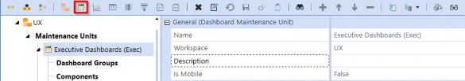
Figure 12.2
Now, select the DMU we created in the previous step and then click Create Group. Give the Dashboard Group a name and save.
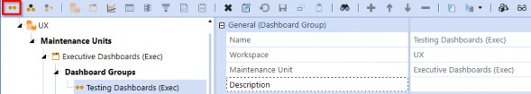
Figure 12.3
Select the Group we created in the previous step and then click Create Dashboard. Give the Dashboard a name and save.
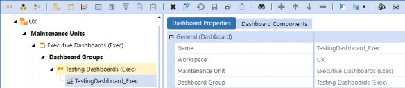
Figure 12.4
| Note: This Dashboard will be used in the following steps but will be deleted afterward. |
Select the DMU again, then click Create Group. Name the Group Executive Dashboards (Exec).
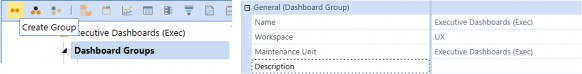
Figure 12.5
Select the Group we created in the previous step and click Create Dashboard. Name the Dashboard
1_Main_Exec and enter Executive Home as the Description.
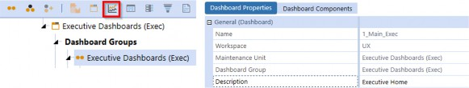
Figure 12.6
Executive Dashboards › Design Considerations › Build Your Own
Data Adapter
In order to effectively monitor the overall performance of our business, it is important to keep a close eye on Key Performance Indicators (KPIs). To achieve this, we will leverage the Cube View below, which is currently accessible from the Cube Views menu in OnePlace. The Cube View POV will typically be reflective of the Executive’s reporting view; however, it can also be parameterized for the Dashboard User if we want them to be able to control the selections.
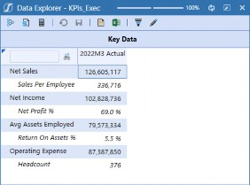
Figure 12.7
Under the DMU we just created, select Data Adapters and click Create Data Adapter.
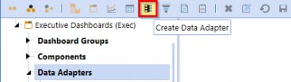
Figure 12.8
Name the data adapter, then select Cube View as the Command Type. Click the Edit button to open the object lookup dialog. Start typing the name of the Cube View KPIs_Exec and you will see the Cube View in the list. Click OK to then save the data adapter.
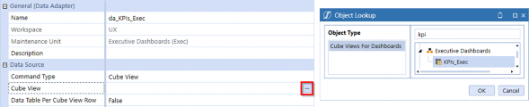
Figure 12.9
Click the Test Data Adapter button from the menu bar to see what the adapter results display.
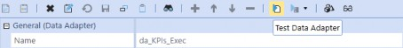
Figure 12.10
Executive Dashboards The data adapter displays the following table; we will reference it when creating the labels.
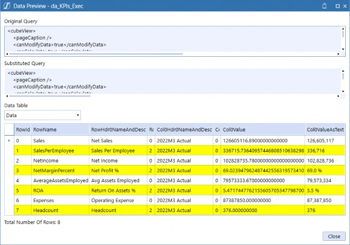
Figure 12.11
Executive Dashboards › Design Considerations › Build Your Own
Cube View
In future steps, we will create buttons for our KPIs that will open dialog boxes for the KPI Cube View; this step configures the dialog boxes. Select Components and click Create Dashboard Component.
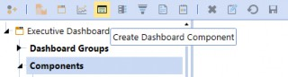
Figure 12.12 Select Cube View from the dialog box and click OK.
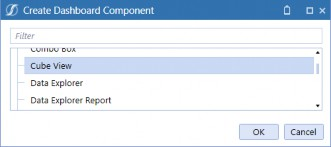
Figure 12.13
Name the Cube View Component and type KPIs_Exec into the Cube View field.
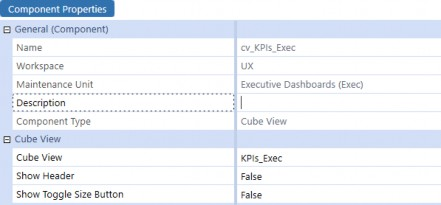
Figure 12.14 Select Dashboard Groups and click Create Group.
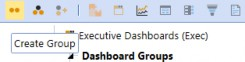
Figure 12.15 Name the Group Dialogs (Exec) and then save.
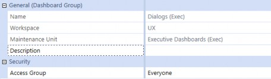
Figure 12.16
Select the new Dashboard Group and click Create Dashboard, then name the Dashboard
KPIs_Exec.
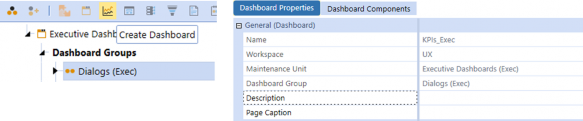
Figure 12.17
Navigate to the Dashboard Components tab and click Add Dashboard Component. Select the Cube View Component we previously created.
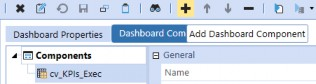
Figure 12.18
Executive Dashboards › Design Considerations › Build Your Own
Labels
To start creating the KPI labels, Select Components and click Create Dashboard Component. Select Label from the dialog box and click OK.
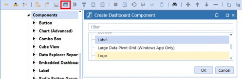
Figure 12.19
Select the Data Adapters tab, then click Add Data Adapter and select the item we created in the previous step.
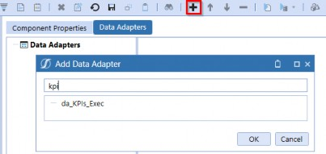
Figure 12.20
Return to the Component Properties tab and enter the properties as shown in Figure 12.21. Notice in the Key Column Value or Row Index field we entered 1; the value entered in this property corresponds to the data table displayed in Figure 12.11. By entering 1, we are querying the data table to display attributes of the Sales Per Employee data record. The Results Column Name property was also selected based on Figure 12.11. The Number Format property allows us to control how the amount is displayed.
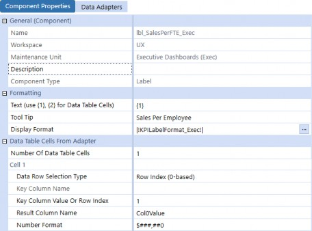
Figure 12.21
We have created our first label. We need three more, so select the label we created and click Copy, then click Paste to create a cloned label.
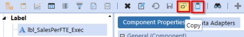
Figure 12.22 Select the copied label and click Rename Selected Item.
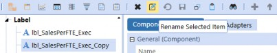
Figure 12.23 Name the new label lbl_OpMgnPct_Exec and click OK.
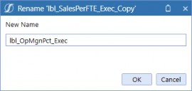
Figure 12.24
Executive Dashboards Update the Key Column Value or Row Index and Number Format properties, then save.
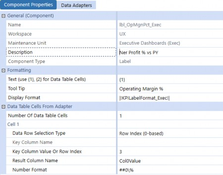
Figure 12.25
Repeat this process for the two remaining labels; make sure to update the Key Column Value or Row Index and Number Format properties!
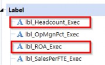
Figure 12.26
Note: The HorizontalAlignment = Center, LabelBold = True, LabelFontSize = 38, LabelNegativeTextColor = XFDarkOrange, LabelTextColor = XFMediumBlueText, VerticalAlignment = Bottom. |
Executive Dashboards › Design Considerations › Build Your Own
Buttons
Next, we need to create buttons for the four KPIs; these buttons will open the dialog box we created in the Cube Views section previously. Select Components and click Create Dashboard Component. Select Button from the dialog box and click OK.
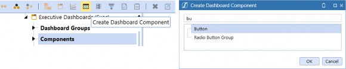
Figure 12.27 Name the button btn_SalesPerFTE_Exec and then save.
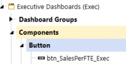
Figure 12.28
Enter the Text and Tool Tip as shown below. We can also configure the Selection Changed User Interface Action to Refresh and enter KPIs_Exec in the Dashboard to Open in Dialog field. This will allow us to open the KPI’s Cube View with a button click.
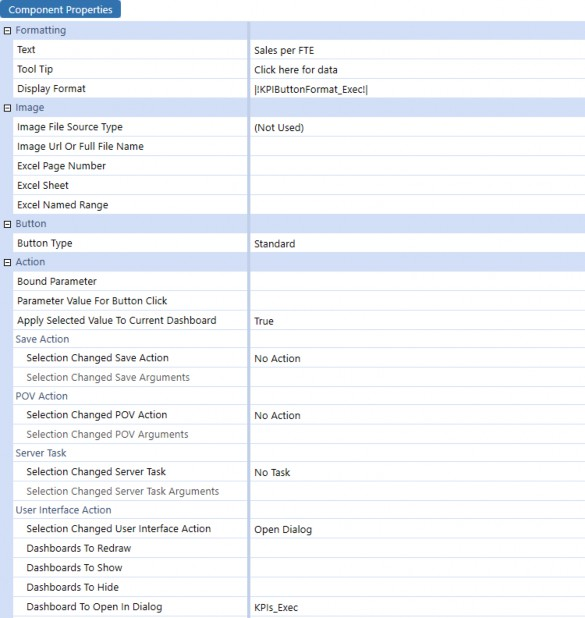
Figure 12.29
Select the button and click Copy, then click Paste to clone the Component.
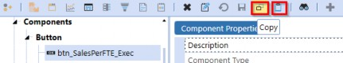
Figure 12.30 Select the copied button and click Rename Selected Item.
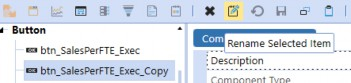
Figure 12.31
Enter btn_OpMgnPct_Exec as the new name and click OK.
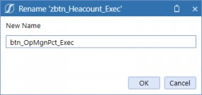
Figure 12.32
Note: The BackgroundColor = Transparent, BorderColor = Transparent, FontSize = 12, HorizontalAlignment = Center, HoverColor = XFLightBlue3, Italic = True, LabelItalic = True, MarginBottom = 5, TextColor = XFMediumGray, VerticalAlignment = Top. |
Repeat this process for the two remaining buttons.
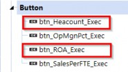
Figure 12.33
We now have four buttons that not only usefully display our KPI information but which also allow our User to click them and be taken to another Dashboard that will show a nice drillable Cube View, where an inquisitive User can query the KPIs and underlying source data should they desire!
Executive Dashboards › Design Considerations › Build Your Own
Line Chart
Our first chart will be a line chart based on the GrossMargin_Exec Cube View. This chart will display a 12-month trend of revenue and expenses, with each line represented by a different color.
This approach will allow us to easily identify the correlation between revenue and expenses and gain a better understanding of the overall financial performance of our business. We will use the data points displayed in the Cube View below as the data source for our chart.
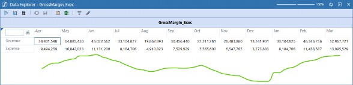
Figure 12.34
First, we need to create a Data Adapter. Select Data Adapters and click Create Data Adapter. Give the data adapter a name, pick the Command Type Cube View and select the Cube View.
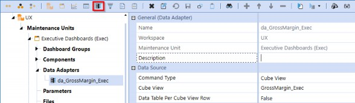
Figure 12.35
Select Components and click Create Dashboard Component. Select Chart (Advanced), then click
OK.
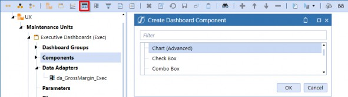
Figure 12.36 Give the chart a name and then select the Data Adapters tab.
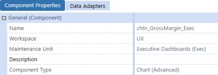
Figure 12.37
Click Add Dashboard Component, then select the data adapter created in the previous step and save.
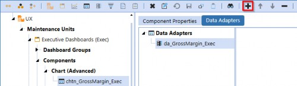
Figure 12.38
This is a great opportunity to stop and review the chart. Navigate to the Dashboard named TestingDashboard_Exec and select the Dashboard Components tab. Click Add Dashboard Component and select the Component chtn_GrossMargin_Exec, then click View Dashboard.
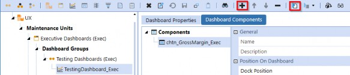
Figure 12.39
Now it’s time to get really fancy. Although the initial display of the chart appears satisfactory, we can enhance its visual appeal and optimize its functionality by implementing certain formatting measures available from the UI. Specifically, we may consider relocating the legend above the chart, utilizing varying shades of blue for the lines, and exploring additional line options that are available.
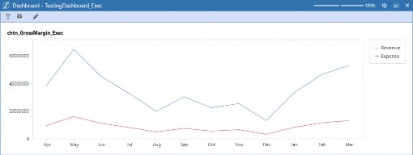
Figure 12.40
The following figure highlights the chart Component properties that we have modified for our line chart. We made the intentional choice to select a spline-type chart under Series Properties to highlight trends and create a more visually appealing Dashboard. These modifications will help us better interpret the data and make informed business decisions. Navigate back to Component Properties and make the following changes.
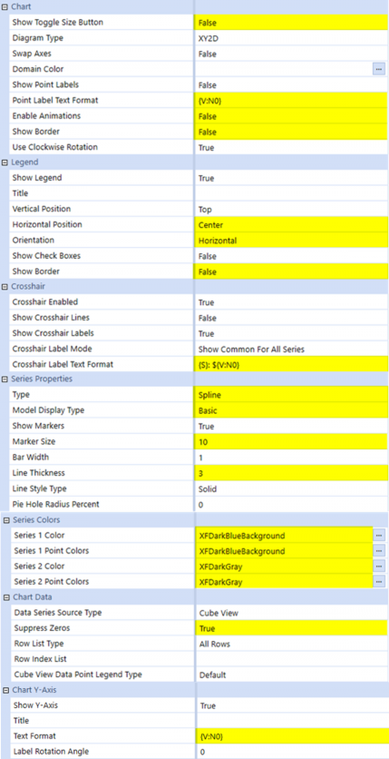
Figure 12.41
Let’s also give our chart a label that describes the data model (so we know what we are looking at). In the chart Component’s Description field, type Revenue & Expense Trend, then save the Component.
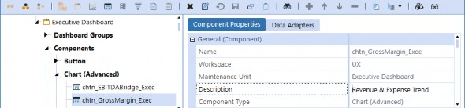
Figure 12.42
After applying our modifications to the chart Component, we can navigate back to the Dashboard and click the View Dashboard button to preview the updates.
The formatted chart now appears more visually cohesive and polished, presenting a significant improvement over its previous iteration. The label tells us what we are looking at, the legend placement gives us more real estate for the actual chart, and the larger markers help identify the data points for easy navigation. The overall look of the chart is more modern and easier to read.
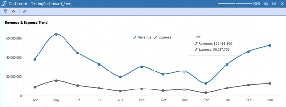
Figure 12.43
Executive Dashboards › Design Considerations › Build Your Own
Waterfall Chart
Our next Component to build is a waterfall chart demonstrating the prior year’s EBITDA walk to the current period EBITDA. The waterfall chart allows us to present this information in a visually impactful manner, which will facilitate decision-making. To do this, we will utilize a Cube View named EBITDABridge_Exec as the data source.
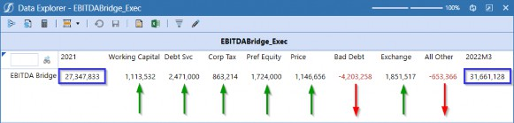
Figure 12.44
As we did for the previous chart, we need to create a Data Adapter for the Cube View. Navigate to
Data Adapters and click Create Data Adapter. Give the data adapter a name and save.
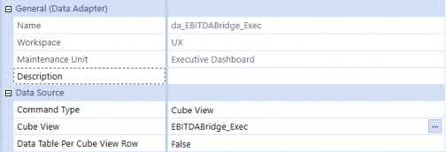
Figure 12.45
Next, select Components and click Create Dashboard Component for the new chart, just like we did for the previous chart and name the new chart Component (chtn_EBITDABridge_Exec). Select Waterfall as Type under the Series Properties.
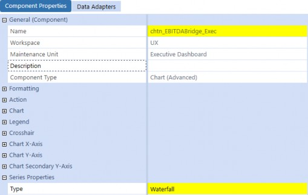
Figure 12.46
Select the Data Adapters tab and click Add Dashboard Component. Then, select the data adapter that we created in the previous step.
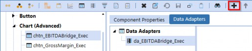
Figure 12.47
This is another great opportunity to stop and review the new chart using our handy-dandy testing Dashboard. Navigate to the Dashboard named TestingDashboard_Exec and select the Dashboard Components tab. Select the existing Component and click Remove Selected Dashboard Component, then click Add Dashboard Component and select the new chart Component, then click View Dashboard.
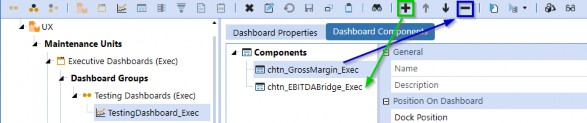
Figure 12.48
The chart looks good, but it could use some adjustments to really polish it. We can give it a title, fix the number format on the Y-axis, remove the legend that is irrelevant to this chart, and change the bar colors to soften the chart up.
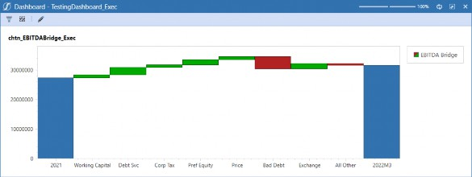
Figure 12.49
The following figure highlights the changes made to the chart Component. Navigate back to
Component Properties and make the following changes to the chart Component.
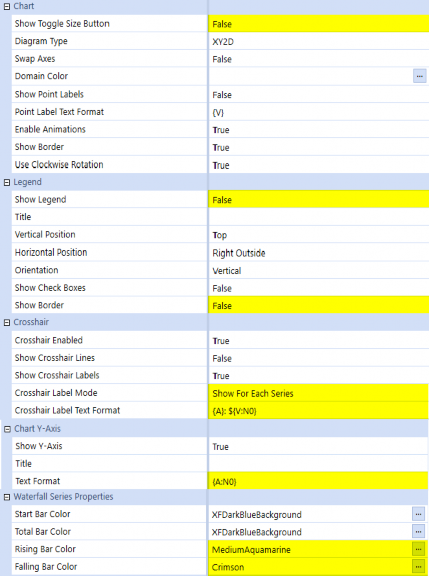
Figure 12.50
After making these changes, navigate back to the Dashboard named TestingDashboard_Exec and click View Dashboard.
Figure 12.51
Executive Dashboards › Design Considerations › Build Your Own
Bar Chart
The final chart we need to build is a bar chart that displays Actual Sales compared to Budget. We want to make this chart dynamic with radio buttons to show sales by region and sales by product; this will allow us to use less real estate on the Dashboard without sacrificing either chart. The Cube View below shows the Sales by Region Cube View that will serve as the data source for the first data set.
Figure 12.52
Navigate to Data Adapters and click Create Data Adapter. Give the data adapter a name and then save. The naming of the data adapter is crucial to allow parameterization, so consistency is key.
Figure 12.53
The next Cube View shows the Sales by Product Cube View that will serve as the data source for the second data set.
Figure 12.54
Again, select Data Adapters and click Create Data Adapter to create the second data source data adapter. Give the data adapter a name and save.
Figure 12.55
Normally the next step would be to create a chart Component, but in order to make this chart dynamic, we need to use a data adapter that will query the data source based on a radio button selection.
The next step is to create a parameter for our two data adapters that will be passed into the final data adapter. Navigate to Parameters and click Create Parameter, then create the parameter as shown below. Notice that we set the Default Value to Region; this means that when a Dashboard Component uses this parameter, it will initially display Region as the selection.
Figure 12.56
Before we can create the final data adapter, we need to create a Business Rule that will pass in the parameterized data adapters. You’re probably asking, “Do I really need to use a Business Rule to create a chart?” Nope! You can create beautiful, dynamic, interactive charts by configuring chart Components with absolutely no coding. For this example, we’re simply showing another method for configuring how a chart is displayed to give you the tools to get even more creative.
The benefit of using this method is that we only need to create one chart Component with a parameterized data adapter that will call the selected data adapter at run-time. An alternative approach would be to create two separate chart Components and attach the respective Product and Region data adapters to them. But, for the sake of maintenance, we’ve decided to leverage a single chart Component which also keeps our DMU decluttered. Business Rules are not for everyone, and the best part is that you don’t need them – keep that in mind as we go through this next example.
From the Application tab, select Business Rules under Tools, and click Create Business Rule.
Figure 12.57
Select Dashboard Data Set under Type and name the Business Rule, then click OK. This is the name of the Business Rule that our data adapter will use to render the chart Component.
Figure 12.58
Below is the syntax used to control the chart Component; these properties will be used in the next data adapter we will create.
Namespace OneStream.BusinessRule.DashboardDataSet.ExecChartHelpers Public Class MainClass
Public Function Main(ByVal si As SessionInfo, ByVal globals As BRGlobals, ByVal api As Object, ByVal args As DashboardDataSetArgs) As Object
Try
Select Case args.FunctionType
Case Is = DashboardDataSetFunctionType.GetDataSet
If args.DataSetName.XFEqualsIgnoreCase("BarFormat") Then
Dim oSeriesCollection As New XFSeriesCollection()
Dim DataAdapter As String = args.NameValuePairs.XFGetValue("DataAdapter")
oSeriesCollection.FillUsingCubeViewDataAdapter(si, False, "UX", DataAdapter, xfdataRowlistType.AllRows,String.Empty,xfChartCubeViewDataPointLegendType.Defa ult,False,XFChart2seriesType.BarSideBySide, args.CustomSubstVars)
Dim sequence As Integer = 0
For Each oSeries As XFSeries In oSeriesCollection.Series oSeries.BarWidth = 0.7
oSeries.ModelType = XFChart2ModelType.BarRange2DSimple oseries.Color = Me.chartColors(si,sequence) sequence = sequence + 1
Next
Return oSeriesCollection.CreateDataSet(si)
End If End Select
Return Nothing Catch ex As Exception
Throw ErrorHandler.LogWrite(si, New XFException(si, ex)) End Try
End Function
#Region "Helpers"
Private Function chartColors(ByVal si As SessionInfo, ByVal sequence As Integer) Try
Dim colorArray(34) As String colorArray(0) = "#FF787778" 'grey colorArray(1) = "#FF3172AF" 'blue
Return colorArray(sequence) Catch ex As Exception
Throw ErrorHandler.LogWrite(si, New XFException(si, ex)) End Try
End Function #End Region
End Class
End NamespaceNext, we need to create the data adapter to query our parameterized data set. Unlike the previous data adapters we created, this data adapter will use a Method Command Type and Business Rule Method Type. The reason for this is that we cannot parameterize the Cube View data adapter; they must be explicitly selected from the Cube View Inventory.
In order to use the Business Rule Method Type, we need to populate the Method Query field with a Business Rule, Data Set Name, and Optional Name-Value pairs. Notice the third section in the string includes the parameter we created to query Region or Product; this will control the data adapter that is passed into our Business Rule.
Figure 12.59
We can test our data adapter by clicking Test Data Adapter. You should see a dialog box appear with the parameter options we listed in the parameter |!UDSelection!|. Click OK.
Figure 12.60
The result will show the Original Query and Substituted Query. Notice the Substituted Query shows the name of the da_SalesByRegion_Exec data adapter; this tells us our parameter is working as expected, and the Series being populated tells us that the query is returning data.
Figure 12.61
To create the chart, navigate to Components and click Create Dashboard Component. Select Chart (Advanced) and name the chart Component. Finally, select the Data Adapters tab, click Add Dashboard Component, and select the newly created data adapter.
Figure 12.62
Navigate back to the Component Properties and make the following changes to the chart Component.
Component Properties Data Adapters El General (Component)
Name
Workspace Maintenance Unit
chtn_SalesByUDSelection_Execold
ux
Executive Dashboards (Exec)
Component Type
8 Formatting
BJ Action
8 Chart
Show Toggle Size Bu ton Diagram Type
swap Axes Domain Color Show Point Labels
Point Label Text Format Ena,ble Animations Show Border
Use Clockwise Rotation El Legend
Show Legend Title
Vertical Position Horizontal Posrti,on Orientation
Show Check Boxes Show Border
El Chart Y-Axis ShowY-Axis Title
Text Format
Label Rotation Angle, Logarithmic Logarithmic Base Use Automatic Range Mirnimum Value Maximum value
Use Automatic step Step
Reverse Order Interlaced Interlaced Color Show Grid wines
Show Minor Grid lines Scale Break Style Type
Maximum umber of Scale Breaks
El Chart Secoridary Y-Axis l±l Series Properties s waterfall Series Properties
l±l Series Colors 13 Chart Data
Data Se,ries Sour,ce Type Suppres, Zeros
Row Ust Type Row Index List
Co,Jbe View Oat. Point Legend Type
Chart (Advanced)
False
XV2D
True
False
(V)
False False True
True
Center Right Vertical True False
True
(V:NO)
0
False
10
True
0
100
True 10
False False
False False
(NOi Used)
0
Business Rule False
All Rows
Default
Figure 12.63
Next, we will create the radio button group to surface the parameter for use on a Dashboard. Navigate to Components and click Create Dashboard Component. Enter the parameter we created (see Figure 12.56) in the Bound Parameter field, and set the Selection Changed User Interface Action to Refresh.
Figure 12.64
Executive Dashboards › Design Considerations › Build Your Own
Data Explorer Report
The last thing we need to build is the Financial Statement for the second tab. Click Create Data Adapter, name the data adapter and select Cube View for the Command Type, then select the Cube View below.
Figure 12.65
Select Components, click Create Dashboard Component, select Data Explorer Report, then click
OK. Name the Component and enter Income Statement as the description.
Figure 12.66
Click on the Data Adapters tab of the Component and click the Add Dashboard Component button. Select the data adapter we created in the previous step, da_IncomeStatement_Exec, and then save the Component.
Figure 12.67
Navigate to the Dashboard Group and click the Create Dashboard button from the menu bar. Name the Dashboard 2b_FinancialStatements_Exec and save.
Figure 12.68
Select the Dashboard Components tab and click Add Dashboard Component, then select der_IncomeStatement_Exec to attach the Data Explorer Report.
Figure 12.69
To provide additional flexibility, we will create a parameter and combo box to filter the Dashboard’s data by Entity. Navigate to Parameters and click Create Parameter.
Figure 12.70
Enter EntitySelection as the parameter name and make the following selections to create the parameter that will be used to filter the data based on the combo box selection.
Figure 12.71
Navigate to Components and click Create Dashboard Component. Select Combo Box from the dialog window, then set the following Component properties.
Figure 12.72
In order to apply the parameter to our Dashboard, we need to update the Cube Views we are using in the data adapters. Navigate to Cube Views from the Application Menu.
Figure 12.73
On each of the Cube Views, open the Point of View and type in |!EntitySelection!| for the Entity Filter.
Figure 12.74
Executive Dashboards › Design Considerations › Build Your Own
Dashboard Layout
Now we are ready to bring the Components together and create the layout for our Dashboard. Navigate to the Executive Dashboards (Exec) Dashboard Group and click Create Dashboard.
Figure 12.75
Name the Dashboard 2a_Header Exec and pick Layout Type as Grid with 1 row and 2 columns.
Figure 12.76
Click on the Dashboard Components tab and click Add Dashboard Component, then add the two items shown below.
Figure 12.77
Use the copy and paste function to clone the 2a_Header Exec Dashboard, then rename the copied Dashboard 2a1_KPIs_Exec and change the Number of Rows and Number of Columns.
Figure 12.78
Click on the Dashboard Components tab and click Remove Selected Dashboard Component twice to remove the copied Components from the new Dashboard.
Figure 12.79
Click Add Dashboard Component, then select the four labels and four buttons we created for the KPIs.
Figure 12.80
Use the copy and paste function to clone the 2a1_KPIs_Exec Dashboard, then rename the copied Dashboard 2a2a_ChartsLeft_Exec and change the Number of Rows and Number of Columns.
Figure 12.81
Click on the Dashboard Components tab and click Remove Selected Dashboard Component eight times to remove the copied Components from the new Dashboard. Click Add Dashboard Component, then select the chart Components shown below.
Figure 12.82
Use the copy and paste function to clone 2a2a_ChartsLeft_Exec to a new Dashboard, then rename the new Dashboard 2a2b_ChartsRight_Exec and change the Row 1 Height setting to Auto, as shown below.
Figure 12.83
Click on the Dashboard Components tab and click Remove Selected Dashboard Component twice to remove the copied Components from the new Dashboard. Click Add Dashboard Component, then select the radio button Component and chart Component shown below.
Figure 12.84
Use the copy and paste function to clone 2a2b_ChartsRight_Exec to a new Dashboard, then rename the copied Dashboard 2a2_Charts_Exec and change the Number of Rows and Number of Columns, as well as the Row 1 Height and Column 1 Width. The result is shown below.
Figure 12.85
Click on the Dashboard Components tab and click Remove Selected Dashboard Component twice to remove the copied Components from the new Dashboard. Click Add Dashboard Component, then select the radio button Component and chart Component shown below.
Figure 12.86
Use the copy and paste function to clone 2a2_Charts_Exec to the Dashboard, then rename the copied Dashboard 2a_Content_Exec and change the Number of Rows and Number of Columns. Also, be sure to set the Row 3 Type to Line and set Row 1 and Row 2 Heights to Auto.
Figure 12.87
Click on the Dashboard Components tab and click Remove Selected Dashboard Component twice to remove the copied Components from the new Dashboard. Click Add Dashboard Component, then select the following embedded Dashboards.
Figure 12.88
Create a new Dashboard and name it 2_Body_Exec. Select Layout Type Tabs and select the
Rounded Corners style from the Edit dialog button.
Figure 12.89
Click Add Dashboard Component, then select the following embedded Dashboards.
Figure 12.90
Executive Dashboards › Design Considerations › Build Your Own
Completed Dashboards
Phew! We made it. This is what our Dashboard structure should look like. Notice that we have methodically named the Dashboards to follow a stacked sequence; this is intended to help with organization.
Figure 12.91
We can review the Dashboard by selecting 2_Body_Exec and clicking View Dashboard.
Figure 12.92
Notice the combo box in the upper right-hand corner. It allows the User to change the Point of View on the Dashboard to display Entity-specific data.
Figure 12.93
If we change the combo box selection, we see the data change for all Dashboard Components.
Figure 12.94
Another Component to review is the radio button we created to parameterize the Sales By Region Chart. If we select the Product radio button, we can see a different data model. This is just one example of how to get the most out of OneStream. We could have additional tabs for pivot grids or Spreadsheet reporting and ad hoc analysis, we could have our Annual Report and monthly PowerPoint packs embedded, we could have our ESG Reports and Dashboards (increasingly important for the Executive!), our stock price, the local weather forecast... the list goes on and on!
Figure 12.95
Lastly, we can review the Financial Statements tab to view our formatted Income Statement for the current period and prior year comparison.
Figure 12.96
Executive Dashboards
Conclusion
In this chapter, we created a simple Executive Dashboard with a variety of charts and methods for creating new data sources. We also created dynamic labels to query the Cube data, which are now available to our Executives to access at their leisure. Finally, we parameterized the Dashboard data and created filters using combo boxes and radio buttons to show the flexibility of how you can tailor Dashboards to meet your needs.
Keep in mind that we’ve only scratched the surface in terms of what is possible when creating Dashboards, but this should give you a bit of an idea how you might want to build your own. Dashboarding in OneStream is one of those things where – once you get the hang of it – it’s actually really exciting to see what you can build, and how you can truly make the application meet your needs and guide your Users. Creating Dashboards in OneStream can seem overwhelming, but once you get the hang of it, you will be building them in minutes. The possibilities are endless, do not be afraid to get creative!